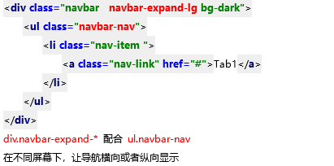

导航栏
最外层 div.navbar . navbar-expand-lg/md/sm/xl
作为子元素ul.navbar-nav的后代选择器路径，
构成响应式导航栏
内层 ul.navbar-nav 弹性，默认主轴column
如何改变主轴方向，配合父级navbar-expand-lg/md/sm/xl
在屏幕宽度足够的时候，横向显示项目，
在屏幕宽度不够的时候，纵向显示，构成响应式导航栏
li.nav-item
a.nav-link

div.navbar-expand-* 配合 ul.navbar-nav
在不同屏幕下，让导航横向或者纵向显示